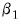
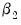
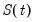
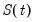
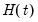

A comparison is then made between the t-statistic on  and that on . If the t-statistic on

is lower than that on , the log model is preferred.
The first section of the Specification tab of the dialog allows selection of the type of dependent variable transformation by using the
Transformation radio buttons. The default selection,
Auto (None/Log), instructs EViews to perform the rule-of-thumb test outlined above to determine whether to log the dependent variable or not. The remaining choices perform no transformation, take logs, or use the Box-Cox transformation. If
Box-Cox is selected, a power parameter for the transform must also be provided.
Auto and
Log should only be used if your data are strictly positive.
The ARIMA Specification area of the dialog selects the type of ARIMA models that will be used during model selection or forecast averaging. To select the maximum level of differencing to be tested use the
Max differencing dropdown box. EViews will perform successive KPSS tests on different levels of differencing, starting from zero and stopping only when the null hypothesis of the KPSS test cannot be rejected, or the maximum level of differencing selected by the user is reached.
The Max. AR,
Max. MA,
Max. SAR and
Max. SMA dropdowns select the maximum order of the AR, MA, SAR and SMA terms of the ARIMA model. The periodicity of the seasonal terms can be entered in the
Periodicity box. If the workfile is dated, EViews will default the periodicity to the number of observations per year, but this may be overwritten to model non-annual seasonalities.
The Regressors box allows entry of any exogenous regressors in the model. By default a constant is included.
The final section of this tab of the dialog includes the Estimation Sample box and the
Forecast length box.
Estimation Sample determines the observations used in determining the appropriate ARIMA model to use for forecasting - it specifies the observations used for the rule-of-thumb regressions determining whether to log the dependent variable or not, the observations used in the successive KPSS tests for determining differencing order, as well as the observations used in the estimation of the individual ARMA models.
Forecast length specifies
h, the number of observations that will be forecasted after estimation. The forecast sample will start immediately after the last observation of the estimation sample and will continue for
h observations. Note the workfile must be sized such that
h observations exist in the workfile after the estimation sample.
Instead of Forecast length, you can alternatively specify the
Forecast endpoint. The observation specified as the forecast endpoint must come after the last observation in the estimation sample. It must also fall within the workfile range.
The Options tab of the dialog provides further options on model selection and output:
The ARMA model selection/averaging box selects the method used to choose the appropriate ARMA model, or the method of forecast averaging. The
Model Selection and
Forecast Averaging radio button select whether to use model selection or forecast averaging, with the dropdown box below them allowing selection of which type of model selection (AIC, BIC, HQ or MSE based), or forecast averaging (SAIC or BMA) to use.
If MSE based model selection is used, the MSE specification area allows specification of the MSE calculations.
Forecast type selects whether the in-sample forecast used to compute the MSE is a dynamic forecast or a static forecast. The
Percentage of estimation sample dropdown selects the part of the estimation sample (chosen on the Specification tab) that is used for in-sample forecasting for calculating the MSE.
The KPSS significance dropdown specifies the significance level to use when determining whether the null hypothesis of the KPSS test is rejected or not during differencing selection.
The Convergence control section includes a checkbox for specifying whether to include non-converged models amongst those included in model selection or forecast averaging. If left unchecked, only ARMA estimations that EViews believes are fully converged will be included in the selection/averaging. If the output of the automatic ARIMA forecasting procedure indicates that a large number of models didn’t converge, and it is believed this may be due to border solutions or a very flat likelihood, checking this option may improve the accuracy of the final forecast.
The Output area allows customization of the output from the procedure. The
Output forecast name: box is used to name the final forecast series in the workfile. By default it is filled in with the name of the underlying series followed by an “_F”.
Checking the Forecast comparison graph check box will produce a graph containing the final forecast (either the forecast from the selected model, or the averaged forecast) along side the forecasts from every other ARMA model considered. The final forecast will be colored red, with the other forecasts in grey. Note, the graph is only displayed if the
Forecast length specified on the
Specification tab is greater than zero (
i.e.—a forecast is actually performed).
The ARMA criteria table and
ARMA criteria graph check boxes specify whether to include a table, or graph, of the “best” 20 models used during model selection or forecast averaging. The graph shows the model selection value for the twenty “best” models. If you use either the Akaike Information Criterion (AIC), the Schwarz Criterion (BIC), or the Hannan-Quinn (HQ) criterion, the graph will show the twenty models with the lowest criterion value. The table form of the view shows the log-likelihood value, the AIC, BIC and HQ values of the top twenty models in tabular form.
Finally, If Model Selection is chosen, selecting the
Equation output table option produces a standard EViews ARMA equation output table of the final selected equation. Similarly, entering a name in the
WF equation name (optional) box will create a new equation object in the workfile with the same specification as the final chosen model. Outputting an equation object allows performance of post-estimation diagnostics and tests.
We select an estimation sample of January 2005 until April 2014. In the ARIMA Specification area we'll leave most of the settings at their default values, other than, since our data has clear seasonal patterns, changing the maximum number of seasonal terms from 0 to 1.
We also add some monthly dummy variables using the @expand(@month) keyword, and add REALGDP and TEMPF as exogenous regressors.
On the Options tab, we keep most of the settings at their default values.
The indicates that the chosen model forecasted the actual values pretty well.
The shows that each of the 100 models picked up the same cyclical patterns pretty well (undoubtedly due to the inclusion of our exogenous regressors).
where  is the trend component,  represents periodic seasonal (weekly, monthly, yearly, etc.
is the trend component,  represents periodic seasonal (weekly, monthly, yearly, etc.) components,  represents potentially irregular holiday effects, and

is a normally distributed idiosyncratic error.
The Prophet options section of the dialog allows you to select some of the options offered by Prophet.
The Sample specification section of the dialog includes the
Estimation Sample box and the
Forecast length box.
The Output section boxes are used to name the final forecast series in the workfile.
You may use the Training observations selection to specify how the forecast series' observations within the training sample will be filled in. By default, EViews overwrites the in-sample forecast values with NAs. You may instead instruct EViews to use the Prophet computed in-sample forecast for the training sample values, or to use the underlying series actual values. Any observations that are neither in the training sample nor the forecast sample will be filled with NAs.


are simply a single constant or trend term. In such cases the only decision the forecaster has to make to set up his forecasts, is the form of the dependent variable, the level of differencing, and the number of AR and MA terms (i.e. – choose
and
). One method of choosing the number of AR and MA terms is through model selection/evaluation techniques.
suggesting homoskedasticity rather than heteroskedasticity. Regression 1 being “more homoskedastic” than regression 2 would suggest the data does not need to be logged. Conversely, regression 2 being “more homoskedastic” than regression 1 suggests the data should be logged.
Information criteria are the most common model selection tool used in econometrics. EViews supports three types of information criteria for most estimation methods; Akaike Information Criterion (AIC), Schwarz Criterion (SIC or BIC), and the Hannan-Quinn Criterion (HQ). Each of these criteria are based upon the estimated log-likelihood of the model, the number of parameters in the model and the number of observations. Additional detail may be found in Appendix E. “Information Criteria” . follows an ARIMAX(
follows an ARIMAX( ) model if:
) model if: is the number of periods in the forecast subsample, and
is the number of periods in the forecast subsample, and  is the number of periods in the full sample.
is the number of periods in the full sample. is approximated using a linear combination of a set of Fourier series.
is approximated using a linear combination of a set of Fourier series.